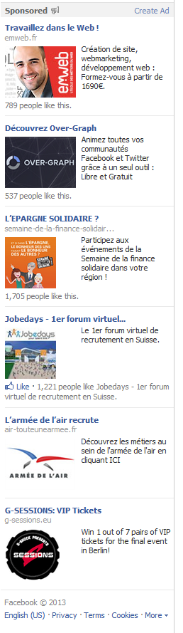

J'ai près de 4000 adresses, mail, photos… Les gens me les ont données. J'ignore pourquoi ils me font confiance, putain d'abrutis !
Marc Zuckerberg dans Business Insider en 2004
En quoi Facebook nous surveille ?
Eloi

Simon
Couleur de peau
Orientation politique
Confession religieuse
Dans quel but Facebook nous surveille ?
Vous n'avez aucun contrôle sur les informations que Facebook possède, vous ne savez pas exactement ce qu'ils savent de vous, vous ne savez pas à qui ils diffusent ces informations, vous ne pouvez pas supprimer ces informations.